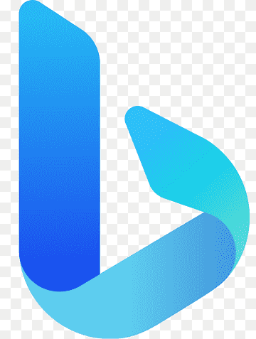

Chongyang Tao is currently a senior applied scientist at Microsoft. He obtained the Ph.D. degree from Peking University (PKU) in 2020, and the B. Eng degree from Sichuan University (SCU) in 2015. Currently, his research interests mainly lie in natural language processing and information retrieval, especially in deep learning models with their applications in dialogue systems, text generation, language understanding, and information retrieval. He has publications at top conferences, including ACL, EMNLP, NAACL, ICLR, NeruIPS, KDD, SIGIR, WSDM, WWW, AAAI, IJCAI.
News
Aug.2023: WizardCoder achieves the 1st-rank on Multilingual Code Models Evaluation Leaderboard  Jun.2023: WizardLM achieves the 1st-rank of the opensource models on Standford AlpacaEval Leaderboard
May.2023: We propose InteR to facilitate knowledge refinement between SEs and LLMs. [Paper] [Github]
Apr.2023: We release WizardLM (expertized in following complex instructions) [Paper] [Github] (4.6K Stars)
May.2023: Our paper got accepted to KDD 2023.
May.2023: Our papers got accepted to ACL 2023.
Jan.2023: Our paper got accepted to WWW 2023.
Jan.2023: Our papers got accepted to ICLR 2023. (LexMAE achives SOTA performance on MS-MARCO passage retrieval)
Jun.2023: WizardLM achieves the 1st-rank of the opensource models on Standford AlpacaEval Leaderboard
May.2023: We propose InteR to facilitate knowledge refinement between SEs and LLMs. [Paper] [Github]
Apr.2023: We release WizardLM (expertized in following complex instructions) [Paper] [Github] (4.6K Stars)
May.2023: Our paper got accepted to KDD 2023.
May.2023: Our papers got accepted to ACL 2023.
Jan.2023: Our paper got accepted to WWW 2023.
Jan.2023: Our papers got accepted to ICLR 2023. (LexMAE achives SOTA performance on MS-MARCO passage retrieval)
Work/Research Experiences
- 2022/11 - Now: Senior Applied Scientist, Microsoft STCA, Beijing, China
- Mainly focus on the improvement and research for BING Search  .
- Research Interests: 1) Representation learning in IR; 2) Effective IR (Distillation); 3) LLMs for search & Generative IR;
| Highlight 1: |
LED (WWW'23),
HypeR (ICLR'23),
LexMAE (ICLR'23),
UnifieR (KDD'23),
R2anker (ACL'23),
PCL(EMNLP'22),
LexLIP(ICCV'23)
|
| Highlight 2: |
ADAM (arxiv'22),
FGD (arxiv'22),
MGSKD (ACL'22),
ContextualKD (EMNLP'22),
CoRE (ACL'23)
|
| Highlight 3: |
InteR (arxiv'23),
WizardLM (arxiv'23),
LameR (arxiv'23),
PKG (arxiv'23) |
- 2020/07 - 2022/11: Postdoctoral Applied Scientist, Microsoft STCA, Beijing, China
- Mainly responsible for the research and improvement of Chat with BING (a virtual assistant for BING).
- Research Interests: 1) Knowledge-driven conversation; 2) Multi-party conversation; 3) Multi-modal conversation
| Highlight 1: |
DRD (ICLR'20),
KnowledGPT (EMNLP'20),
ZRKGC (NeurIPS'21),
TegTok (ACL'21),
PTKGC (ACL'21),
PersonaKGC (ACL'22),
DivKGC (EMNLP'22)
|
| Highlight 2: |
MPC-BERT (ACL'21),
HeterMPC (ACL'22),
MPCSurvey (IJCAI'22),
BERT-SL (AAAI'21)
|
| Highlight 3: |
Maria (ACL'21),
MMDial (ACL'22),
VideoDial (EMNLP'22)
|
- 2016/11 - 2020/05: Ph.D. Candidate, Peking University, Beijing, China
- Research Interests: 1) Human-centered dialogue generation; 2) Dialogue retrieval & context modeling; 3) Open-domain dialogue evaluation.
- 2017/11 - 2020/02: Research Development Engineering Intern, Microsoft STCA, Beijing, China
- Focus on the research of open-domain dialogue and the improvement of the core chat engine in MS.
- Highlight 1 (2019/03-2019/06): Participate in the design and implementation of retrieval-based modules for the empathy dialogue model in Microsoft Rinna, and help collaborators ship it to the product.
- Highlight 2 (2018/03-2018/06): Responsible for designing neural-based ranking features for Microsoft Zo.